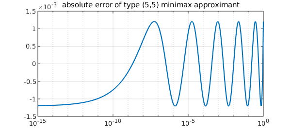
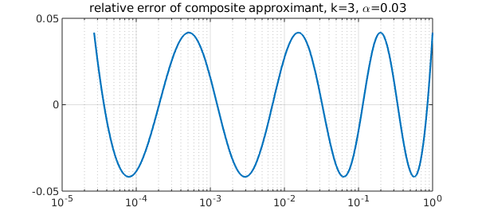
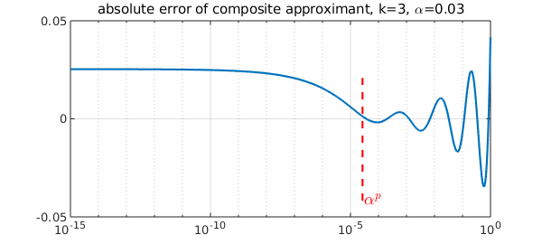
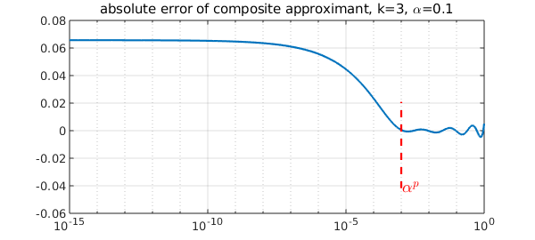
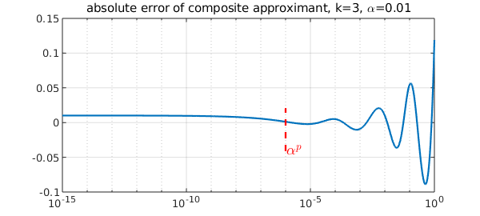
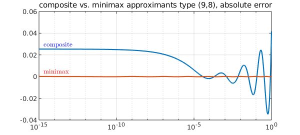
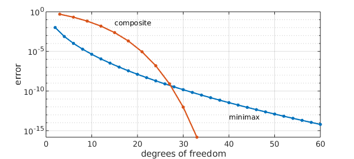

Best rational approximation to the $p$ th root
A landmark result of rational approximation theory states that the pth root $x^{1/p}$ on $[0,1]$ can be approximated by type $(n,n)$ rational functions with root-exponential accuracy. (By contrast, polynomials can only converge algebraically.) Specifically, there exist rational functions $r_n$ of type $(n,n)$ such that asymptotically as $n\rightarrow \infty$,
$$\max_{x \in [0,1]} |r_n(x)-x^{1/p}| \sim 4^{1+1/p}\sin(\pi/p)\exp( -2\pi \sqrt{n/p} ),$$
where the constants were worked out by Stahl [3].
For example, here is the error curve of the minimax rational approximant of type $(5,5)$ to the cube root, shown on a semilogx scale. It has the famous equioscillation property at $5+5+2=12$ points:
p = 3;
f = chebfun(@(x)x^(1/p),[0 1],'splitting','on');
[~,~,r] = minimax(f,5,5);
xx = logspace(-15,0,1000)';
semilogx(xx,f(xx)-r(xx)), grid on
title('absolute error of type (5,5) minimax approximant')

Approximation by composite rational functions
In [1], Gawlik examined rational approximations of $x^{1/p}$ obtained by composing rational functions of lower degree. One example is the function $f_k(x)$ defined recursively by
$$ f_{k+1}(x) = \frac{1}{p}\left( (p-1)\mu_k f_k(x) + \frac{x}{\mu_k^{p-1} f_k(x)^{p-1}} \right), \quad f_0(x) = 1, $$
$$ \alpha_{k+1} = \frac{p \alpha_k}{(p-1)\mu_k + \mu_k^{1-p}\alpha_k^p}, \quad \alpha_0 = \alpha, $$
where $\alpha \in (0,1)$ is a parameter and
$$\mu_k = \left( \frac{\alpha_k - \alpha_k^p}{(p-1)(1-\alpha_k)} \right)^{1/p}.$$
$f_k$ is a rational function of type $(3^{k-1},3^{k-1}-1)$, and the scaled function $\widetilde{f}_k(x)=2\alpha_k f_k(x)/(1+\alpha_k)$ has the property that the relative error $x^{-1/p}(\widetilde{f}_k(x)-x^{1/p})$ equioscillates at $2^k+1$ points on $[\alpha^p,1]$. For details, see [1,2]. Here is an illustration.
alp = 0.03; alpini = alp; % approximation on $[alp^p,1]$
rr = @(x)1;
for kk = 1:3
mu = ((alp-alp^p)/((p-1)*(1-alp)))^(1/p);
rr = @(x) 1/p*((p-1)*mu*rr(x) + x./(mu*rr(x)).^(p-1));
alp = p*alp / ((p-1)*mu + mu^(1-p)*alp^p);
end
y = @(x)2*alp/(1+alp)*rr(x);
xx = logspace(log10(alpini^p),0,1000);
relerr = (y(xx)-f(xx))./(f(xx));
semilogx(xx,relerr), grid on
title(['relative error of composite approximant, k=3, \alpha=',num2str(alpini)])

Instead of the relative error, we might be interested in the absolute error, for example when approximation at or near $x=0$ is of interest. How does it look? Here is a plot including much smaller values of $x$.
xx = logspace(-15,0,1000); abserr = y(xx)-f(xx); semilogx(xx,abserr),grid on LS = 'linestyle'; IN = 'interpreter'; LT = 'latex'; CO = 'color'; FS = 'fontsize'; MS = 'markersize'; line([alpini^p alpini^p],norm(abserr,inf)*[-1 0.5],LS,'--',CO,'r') text(alpini^p*1.1,-norm(abserr,inf),'$\alpha^p$',IN,LT,FS,18,CO,'r') title(['absolute error of composite approximant, k=3, \alpha=',num2str(alpini)])

The error is oscillating with growing amplitude on $[\alpha^p,1]$ as expected, and it takes the smallest values near $x=\alpha^p$. On $[0,\alpha^p]$, the error grows towards $x=0$, but stays bounded.
The picture looks quite different if we start with a different value of $\alpha$. For example with a larger $\alpha$,
alp = 0.1; alpini = alp;
rr = @(x)1;
for kk = 1:3
mu = ((alp-alp^p)/((p-1)*(1-alp)))^(1/p);
rr = @(x) 1/p*((p-1)*mu*rr(x) + x./(mu*rr(x)).^(p-1));
alp = p*alp / ((p-1)*mu + mu^(1-p)*alp^p);
end
y2 = @(x)2*alp/(1+alp)*rr(x);
xx = logspace(-15,0,1000);
abserr2 = y2(xx)-f(xx);
hold off, semilogx(xx,abserr2), grid on
line([alpini^p alpini^p],norm(abserr,inf)*[-1 0.5],LS,'--',CO,'r')
text(alpini^p*1.1,-norm(abserr,inf),'$\alpha^p$',IN,LT,FS,18,CO,'r')
title(['absolute error of composite approximant, k=3, \alpha=',num2str(alpini)])

Here is a run with a smaller $\alpha$.
alp = 0.01; alpini = alp;
rr = @(x)1;
for kk = 1:3
mu = ((alp-alp^p)/((p-1)*(1-alp)))^(1/p);
rr = @(x) 1/p*((p-1)*mu*rr(x) + x./(mu*rr(x)).^(p-1));
alp = p*alp / ((p-1)*mu + mu^(1-p)*alp^p);
end
y3 = @(x)2*alp/(1+alp)*rr(x);
xx = logspace(-15,0,1000);
abserr3 = y3(xx)-f(xx);
hold off, semilogx(xx,abserr3), grid on
line([alpini^p alpini^p],norm(abserr,inf)*[-1 0.5],LS,'--',CO,'r')
text(alpini^p*1.1,-norm(abserr,inf),'$\alpha^p$',IN,LT,FS,18,CO,'r')
title(['absolute error of composite approximant, k=3, \alpha=',num2str(alpini)])

The maximum absolute error is attained at either $x=0$ or $x=1$. In [2] we showed that by balancing the errors at these endpoints we obtain a good composite rational approximant to $x^{1/p}$. How does the convergence compare with minimax? With respect to the degree, it is of course worse. The rational approximants are of type $(3^{k-1},3^{k-1}-1)=(9,8)$. For example, let's compare minimax with the first approximant above.
[~,~,r,err] = minimax(f,9,8);
minimaxerr = r(xx)-f(xx);
hold off, semilogx(xx,abserr), grid on
hold on
semilogx(xx,minimaxerr)
text(xx(20),abserr(1)+4e-3,'composite',IN,LT,CO,'b')
text(xx(20),minimaxerr(1)+4e-3,'minimax',IN,LT,CO,'r')
title('composite vs. minimax approximants type (9,8), absolute error')
hold off
Trial interpolant too far from optimal... Trying AAA-Lawson-based initialization...

It can be shown that with respect to the degree, the composite rational approximant converges almost "pth root exponentially", that is, the error scales roughly like $\exp(-cn^{1/p})$ where $n$ is the degree. More precisely, we obtain the bound
$$\max_{x \in [0,1]} |f_k(x)-x^{1/p}| \leq \exp( -b n^c ),$$
where $b$ is a positive constant depending on $p$, $n=p^{k-1}$ is the degree of $f_k$, and
$$ c = \frac{ \log \left(\frac{p}{p-1}\right) \log 2 }{ \log \left(\frac{2p}{p-1}\right) \log p }.$$
But we claim that composite approximants are still interesting, because they can be generated using very few parameters---only $O(k)$ parameters are used to express a rational function of degree $3^k$. For example, here is a convergence comparison with respect to the degrees of freedom. With a double exponential convergence with respect to $k$, composite rational approximants eventually outperform minimax.
k = 10; % max. number of compositions
n = 1:30;
stahl = exp(-2*pi*sqrt(n))*4^(1+1/p)*sin(pi/p); % Stahl's minimax estimate
semilogy(2*n,stahl,'.-',MS,12)
grid on, hold on
nn = p.^(0:k);
exponent = log(p/(p-1))*log(2) / (log(2*p/(p-1))*log(p)); % exponent obtained in [2]
b = 3; % experimental constant
semilogy(p*(1:k+1),exp(-b*nn.^exponent)*10,'.-',MS,12);
xlabel('degrees of freedom'), ylabel('error')
text(p*(k/2),exp(-b*nn(1)^(1/exponent)),'composite',FS,12)
text(40,stahl(end)*10,'minimax',FS,12)

This makes composite rational approximants attractive in e.g. computing functions at a matrix argument, for which the efficiency gain can be exponential as compared to the minimax approximant. For details, see [2].
References
[1] E. S. Gawlik, Rational minimax iterations for computing the matrix $p$ th root, arXiv:1903.06268, 2019.
[2] E. S. Gawlik and Y. Nakatsukasa, Approximating the $p$ th root by composite rational functions, arXiv:1906.11326, 2019.
[3] H. Stahl. Best uniform rational approximation of $x^\alpha$ on $[0, 1]$, Acta Math., 190 (2003), 241-306